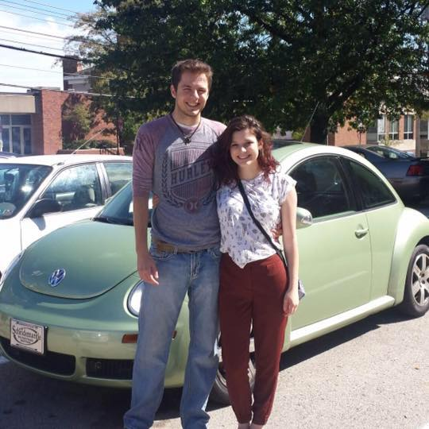

Applicationshide
Student's Edge
Projectshide
Data Storage System
Data Mining Technique Analysis
Eye Tracking Chess Players
My final project for Eye Tracking Methodology involved designing and carrying out an experiment to compare the eye-movement patterns of novice and expert chess players. With the help of a Tobii X60 eye tracker, we found that, in general, expert players spend more time attenuating to spatial relationships between pieces, whereas novice players spend more time looking at the pieces themselves.
About
General Info
I am a Computing and Information Studies major at Washington and Jefferson College, with minors in Neuroscience and Philosophy. Although I have a strong interest in programming and solving problems through computers, I am also fascinated by how the human mind works, both physiologically and on a more abstract level. I have been programming for six years and would consider myself proficient in Java, Javascript and JQuery/Jquery Mobile, HTML5 and CSS3, XML, JSON, and SQL.
I have recently concluded my internship at Aires for the summer, but I work on programming projects in my spare time as well. You can contact me using either email below.
Some Coursework Highlights
| App Design and Development | Eye Tracking Methodology | Computer-Voice Interfaces |
| Data Structures | Advanced Topics in Neuroscience | Bioethics |
| Human Computer Interaction | Experimental Neuroscience | Aesthetics |
| Advanced Database Concepts | ||
| Data Mining |